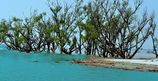
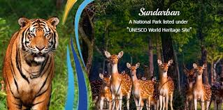
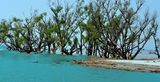
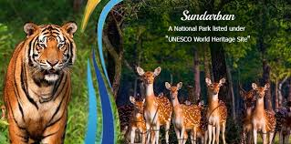

Boat Safari
Navigate creeks, mudflats and mangrove channels in guided boats.
Sundarbans is the world’s largest mangrove forest and a UNESCO World Heritage Site. Its interlinked rivers, creeks and islands create an environment unlike anywhere else in India. Boat safaris offer glimpses of crocodiles, birds, deer, and—if lucky—the Royal Bengal Tiger.
The region is peaceful, remote and best explored slowly by guided boats.
Navigate creeks, mudflats and mangrove channels in guided boats.
Key observation point for spotting wildlife and visiting the interpretation centre.
Elevated walk inside core forest giving panoramic mangrove views.
Most common zone for tiger sightings and deer viewing.
Slow cruise through mangroves, creeks and watchtower zones.
Viewpoint plus small museum explaining mangrove ecology and tiger conservation.
Elevated pathway inside forest giving rare angles of mangrove habitat.
Short and nature-focused.
Quick trip
Relaxed visit
3–4 days
Closest cluster to most safari routes and watchtowers.
Best for early-morning boat departures.
Quiet island stays with river-facing eco lodges.
Good for peaceful nature time.
Guesthouses and simple resorts near mainland access points.
Convenient for short trips.


 



Weather, wildlife and safety basics.